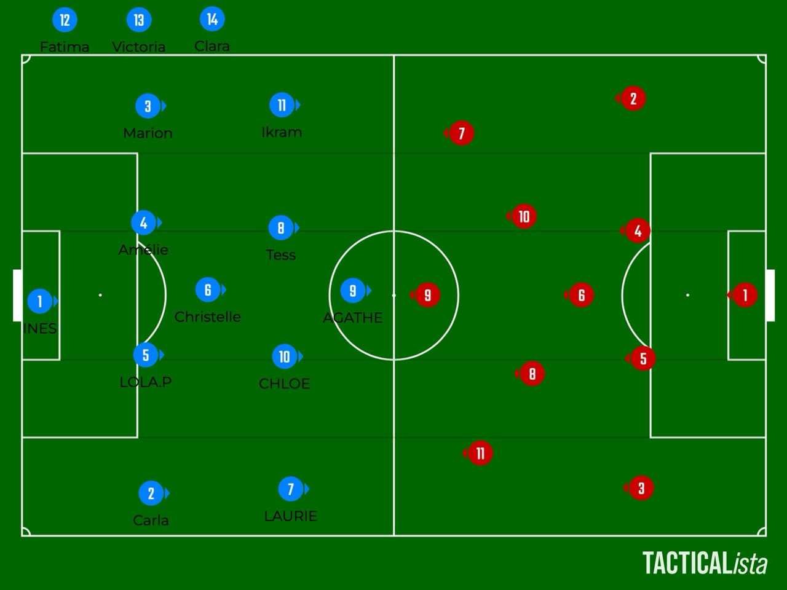

Rapport du match F.C. Thongue Libron - U.S. Colomiers 20/10/2024
1:9 
Mi-Temps 1:4
Dimanche 20 octobre 2024 15:00
Troisième tour de coupe de France
Stade Antoin Montolin

Résumé du Match
coup d'envoie
3' BUT USC Carla Benedetto
9' BUT USC Ikam
15' BUT USC Agathe Daviaud
3' BUT FCTL Erika Boix
| Nom |
Prénom |
BUTS |
Passes Décisives |
Centre |
TC |
THC |
Corner 1P |
Corner 2P |
Corner C |
Coup Franc D |
Coup Franc I |
| Agathe |
Daviaud |
35 |
37 |
5 |
4 |
6 |
13 |
12 |
5 |
5 |
| Laurie |
Falcou |
35 |
37 |
5 |
4 |
6 |
13 |
12 |
5 |
5 |